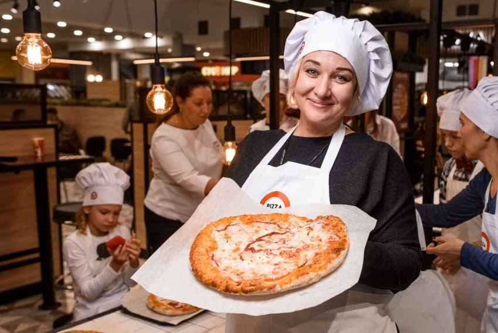
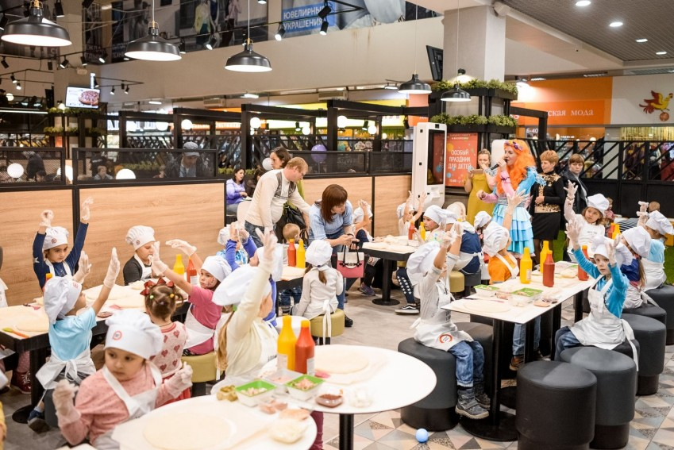

Pizza Mia в Екатеринбурге перешла на эко-стиль
Флагманский ресторан Pizza Mia
(в ТЦ "Мегаполис")
уже неделю встречает посетителей
в обновлённом интерьере.
Первыми рестайлинг пиццерии
увидели форумчане Е1.RU.
Приглашённые гости провели
собственный "ревизорро".
А в рамках кулинарного
мастер-класса узнали все тонкости
приготовления толстой
корочки фирменной пиццы.
Первое, что отметили
гости: на входной группе
исчезли привычные ресторану
кричащие цвета. Лаконичный
дизайн, приятная фактурная
мебель из экологических
материалов в чёрно-белых
тонах и детали, цепляющие
взгляд: например, лампочки
Эдисона, под которыми
хочется сделать селфи.
Второе – разделение кассовой зоны и
зоны выдачи заказа. Так
ожидание заказа перестало
быть в тягость – вы не стоите у
кассы, пока вам всё соберут,
а спокойно размещаетесь
в зале.
Командовал мастер-классом
голос радиостанции
"Наше радио" Андрей Петрович.
—Я помню, как бегал в
пиццерию ещё в студенческие
годы. Всегда тут было демократично
и сыто. И сейчас, когда с ребёнком
гуляем и вдруг нам захотелось
поесть, то прямиком идём сюда
,
– рассказал он.

Орудуя кисточками
и взяв за холст круг теста,
каждый стремился оформить свою
пиццу с авторским подходом.
Кто сказал, что кулинария не
искусство?
—Я по профессии
бухгалтер. На форумах сижу
давно, в темах "Общение автоклуба"
и связанных с кулинарией.
Очень рада, что пригласили поучаствовать
в мастер-классе. У всех получились
абсолютно разные пиццы. Кто знает,
может, директора ресторана
предложат ввести их в новое меню
,
– рассказала форумчанка
Алёна.
—Мы с семьёй провели
отличный вечер. Я учитель
английского, но сейчас нахожусь
в декрете. Поэтому, сегодня
– отрыв! В Pizza Mia мне нравится пицца.
Она напоминает домашнюю.
Не могу сказать, когда мой ребёнок
попробует пиццу, но мы придём
вместе с ним тогда, когда он сам начнёт
ходить
, – поделилась
впечатлениями
ещё одна гостья мастер-класса
Полина.

На второй день презентации обновлённого
заведения собралось много
людей. За всю историю именно
этого ресторана такой
ажиотаж наблюдался дважды.
Первый раз – когда было открытие
и цены снизили на 50% на всё меню.
И в минувшие выходные. Организаторы
устроили праздник для всей семьи.
Гостей встречали как близких
друзей, давно знакомых.
—Место стало
привлекательнее и душевнее.
И девушку пригласить нестыдно,
и с семьей посидеть приятно
,
– отметил гость ресторана.
– В меню
стало больше сезонных новинок,
которые тоже не терпится попробовать.
На ценах новый дизайн никак не сказался.
По-прежнему демократично,
доступно, вкусно, а теперь ещё и очень
стильно!